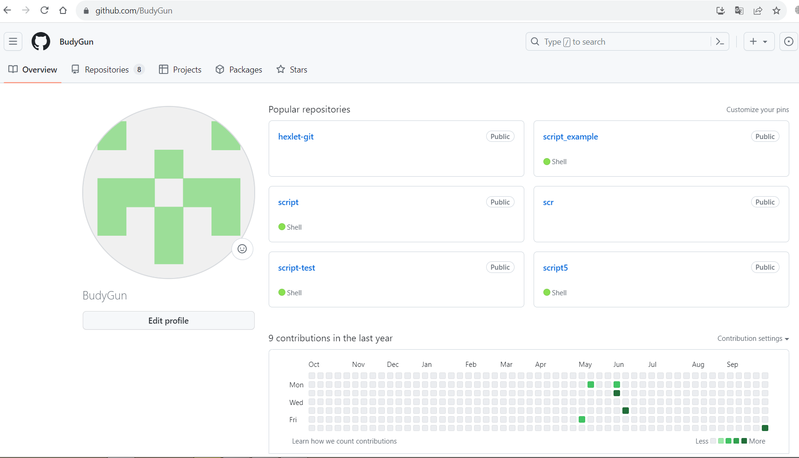
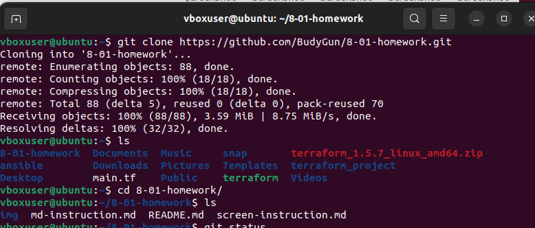
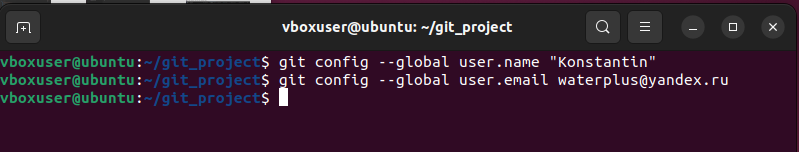
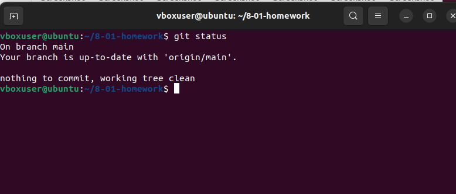
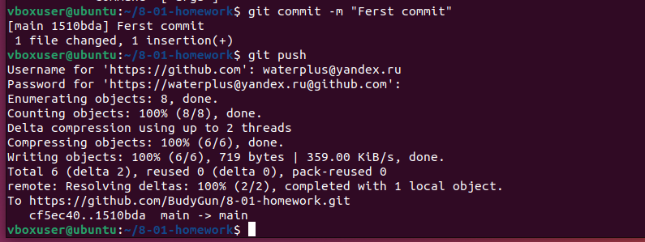
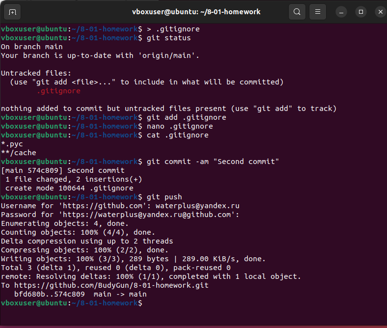

Домашнее задание к занятию "Git" - Чумаков Константин
Инструкция по выполнению домашнего задания
- Сделайте
forkрепозитория c шаблоном решения к себе в GitHub и переименуйте его по названию или номеру занятия, например, https://github.com/имя-вашего-репозитория/gitlab-hw или https://github.com/имя-вашего-репозитория/8-03-hw. - Выполните клонирование этого репозитория к себе на ПК с помощью команды
git clone. - Выполните домашнее задание и заполните у себя локально этот файл README.md:
- впишите сверху название занятия, ваши фамилию и имя;
- в каждом задании добавьте решение в требуемом виде — текст, код, скриншоты, ссылка;
- для корректного добавления скриншотов используйте инструкцию «Как вставить скриншот в шаблон с решением»;
- при оформлении используйте возможности языка разметки md. Коротко об этом можно посмотреть в инструкции по MarkDown.
- После завершения работы над домашним заданием сделайте коммит
git commit -m "comment"и отправьте его на GitHubgit push origin. - Для проверки домашнего задания в личном кабинете прикрепите и отправьте ссылку на решение в виде md-файла в вашем GitHub.
- Любые вопросы по выполнению заданий задавайте в чате учебной группы или в разделе «Вопросы по заданию» в личном кабинете.
Желаем успехов в выполнении домашнего задания!
Задание 1
Что нужно сделать:
- Зарегистрируйте аккаунт на GitHub.
- Создайте новый отдельный публичный репозиторий. Обязательно поставьте галочку в поле «Initialize this repository with a README».
- Склонируйте репозиторий, используя https протокол
git clone .... - Перейдите в каталог с клоном репозитория.
- Произведите первоначальную настройку Git, указав своё настоящее имя и email:
git config --global user.nameиgit config --global user.email johndoe@example.com. - Выполните команду
git statusи запомните результат. - Отредактируйте файл README.md любым удобным способом, переведя файл в состояние Modified.
- Ещё раз выполните
git statusи продолжайте проверять вывод этой команды после каждого следующего шага. - Посмотрите изменения в файле README.md, выполнив команды
git diffиgit diff --staged. - Переведите файл в состояние staged или, как говорят, добавьте файл в коммит, командой
git add README.md. - Ещё раз выполните команды
git diffиgit diff --staged. - Теперь можно сделать коммит
git commit -m 'First commit'. - Сделайте
git push origin master.
Решение:
Мой ник на github:
Создал репозиторий: https://github.com/BudyGun/8-01-homework.git
Клонирование и переход в каталог:
Настройка Git:
Выполнение git status:
Команды git diff:
Команда git diff выводит информацию по изменениям файлов, которые не были добавлены в индекс. В моем случае файл README.md не был добавлен в индекс, но в нем были изменения. Вижу это в выведенной информации ниже. Команда git diff --staged ничего не вывела, т.к. эта команда выводит изменения только по файлам, добавленным в индекс. В моем случае таких изменений нет.
После добавления в индекс:
После добавления файла README.md в индекс, вижу что результат вывода команды git diff нулевой, т.к. нет изменений в файлах, которые не были добавлены в индекс, а после ввода команды git diff --staged появился результат - изменения в файле README.md, который был добавлен в индекс ранее.
Коммит и push:
Задание 2
Что нужно сделать:
- Создайте файл .gitignore (обратите внимание на точку в начале файла) и проверьте его статус сразу после создания.
- Добавьте файл .gitignore в следующий коммит
git add.... - Напишите правила в этом файле, чтобы игнорировать любые файлы
.pyc, а также все файлы в директорииcache. - Сделайте коммит и пуш.
Решение:
Задание 3
Что нужно сделать:
- Создайте новую ветку dev и переключитесь на неё.
- Создайте в ветке dev файл test.sh с произвольным содержимым.
- Сделайте несколько коммитов и пушей в ветку dev, имитируя активную работу над файлом в процессе разработки.
- Переключитесь на основную ветку.
- Добавьте файл main.sh в основной ветке с произвольным содержимым, сделайте коммит и пуш. Так имитируется продолжение общекомандной разработки в основной ветке во время разработки отдельного функционала в dev ветке.
- Сделайте мердж dev ветки в основную с помощью
git merge dev. Напишите осмысленное сообщение в появившееся окно коммита. - Сделайте пуш в основной ветке.
- Не удаляйте ветку dev.
Решение:
🎉 Домашнее задание выполнено!
Все задания успешно завершены. Репозиторий содержит все необходимые файлы и коммиты.